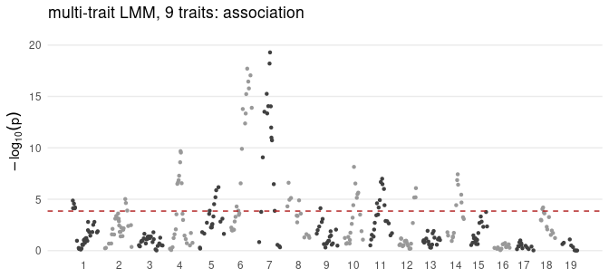
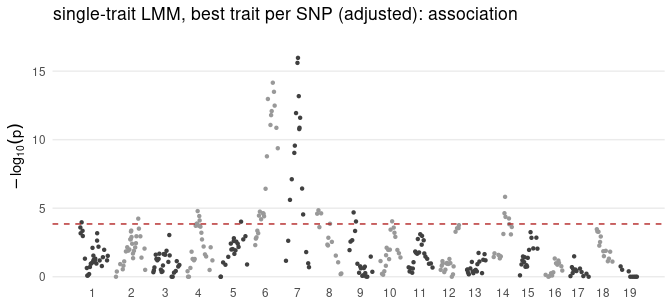
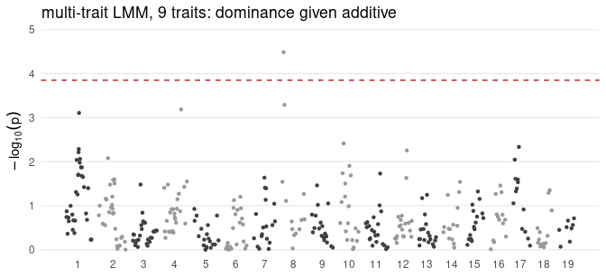
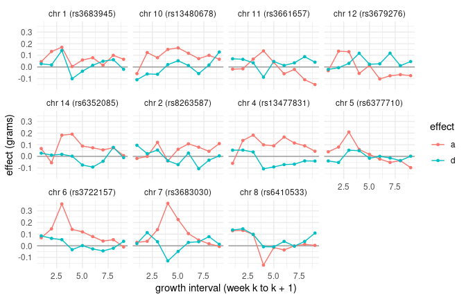

Genome scans for many traits: additive and dominance effects
Source:vignettes/indri-gwas.Rmd
indri-gwas.RmdThis vignette scans the genome of the LG/SM F3 mice for loci
affecting nine weekly weight gains: jointly across the nine traits,
trait by trait, and for dominance. It uses the G and
E estimated in the vignette Estimating G for many
traits, and was precomputed.
Setup
# The data every vignette uses: the nine weekly weight gains of the LG/SM F3
# mice, with the fixed effects of the original analyses.
library(indri)
traits <- lgsm_traits$growth
d <- lgsm_f3[lgsm_f3$ID %in% rownames(lgsm_genotypes$A), ]
d <- d[stats::complete.cases(d[c(traits, "LSB", "LSW")]), ]
Y <- as.matrix(d[traits])
rownames(Y) <- d$ID
X <- stats::model.matrix(~ SEX + factor(COHORT) + LSB + LSW, d)
rownames(X) <- d$ID
A <- lgsm_A[rownames(Y), rownames(Y)]
dosage <- lgsm_genotypes$A[rownames(Y), ] + 1
info <- transform(lgsm_markers, pos = cM)
cores <- as.integer(Sys.getenv("INDRI_VIGNETTE_CORES", "2"))
dir.create("cache", showWarnings = FALSE)
fit <- if (file.exists("cache/fit_sommer.rds")) readRDS("cache/fit_sommer.rds") else
fit_G(Y, X = X, A = A, engine = "sommer", cores = cores, seed = 1L,
progress = FALSE)
c(mice = nrow(Y), traits = ncol(Y), markers = ncol(dosage))
#> mice traits markers
#> 1548 9 353The genotypes are the additive coding of lgsm_genotypes
plus one: 0, 1 and 2 copies of one parental allele. info
places the 353 markers on the genetic map (cM).
The multi-trait scan
One test per marker against all nine traits at once, in a linear
mixed model whose covariance is G and E with
the relationship matrix A:
multi <- indri_gwas(Y, dosage, fit = fit, A = A, X = X, snp_info = info)
multi
#> indri association scan: multi-trait LMM
#> 353 SNPs, 9 traits, 1548 individuals
#> null variance ratio delta: 0.997
#> smallest p-value: 5.16e-20
summary(multi, n = 8)
#> indri association scan: multi-trait LMM
#> 353 SNPs tested
#> genomic inflation (lambda_gc): 2.318
#>
#> smallest p-values:
#> snp chrom cM bp pos pvalue
#> rs3683030 7 39.86 92968513 39.86 5.161e-20
#> rs13479385 7 38.13 87009942 38.13 6.253e-19
#> rs3722157 6 58.30 122444202 58.30 1.963e-18
#> rs6199136 6 70.18 140483280 70.18 8.818e-18
#> rs13479024 6 62.19 127614936 62.19 3.542e-17
#> rs6339546 6 64.45 133981207 64.45 1.653e-16
#> gnf07.056.997 7 27.70 56324216 27.70 5.551e-16
#> mCV23042866 6 54.62 117194262 54.62 5.887e-16delta is the ratio between E and
G that the scan re-fits under the null; at 0.997 it says
the G and E from fit_G() describe
the data being scanned. The genomic inflation factor
lambda_gc compares the median test statistic with its null
expectation, here 2.32. That is not a miscalibrated test: in a cross
between lines selected for size every chromosome carries loci, and in an
F3 each marker is linked to long stretches of its chromosome, so most
markers are associated with growth. The calibration of these tests on
simulated null markers is in STATUS.md.

The dashed line is the Bonferroni threshold for 353 markers. Markers in an F3 are strongly linked, so a QTL lifts a whole stretch of chromosome; a region, not a single marker, is the unit of discovery.
Trait by trait
single <- indri_gwas(Y, dosage, A = A, X = X, snp_info = info,
mode = "single_trait", adjust = "effective")
single$n_tests
#> [1] 8.741756
plot(single, threshold = threshold)
The single-trait tests are adjusted for the number of traits by their effective number (Galwey 2009), counted from the correlations of the traits after the fixed effects. Each marker’s smallest adjusted p-value is plotted.
hits <- data.frame(
multi_trait = sum(multi$pvalues <= threshold),
single_trait = sum(apply(single$pvalues_adjust, 1, min) <= threshold),
both = sum(multi$pvalues <= threshold &
apply(single$pvalues_adjust, 1, min) <= threshold))
hits
#> multi_trait single_trait both
#> 1 78 49 44At the Bonferroni threshold the joint test finds 78 markers and the single-trait tests 49, 44 of them in common. The joint test gains where a locus has modest effects on several traits; a single-trait test gains where one trait carries all of the effect. In simulations the joint test was the more powerful one for most patterns of effects (STATUS.md), with the largest gains when the effects run against the correlations between traits.
Empirical thresholds
Permuting the genotypes across mice gives empirical p-values and a permutation estimate of the false discovery rate:
perm <- indri_gwas(Y, dosage, fit = fit, A = A, X = X, snp_info = info,
n_permutations = 999L, fdr = 0.05, seed = 1L, cores = cores)
perm$fdr_threshold
#> [1] 0.02619424
sum(perm$qvalues_empirical <= 0.05)
#> [1] 182At a false discovery rate of 5%, 182 of the 353 markers are discoveries: linkage again, each QTL carrying its neighbours. Permuting genotypes across relatives ignores their relatedness (the permuted genotypes no longer follow the pedigree), so treat these as a check on the analytic p-values, not a replacement.
Dominance
In an F3 the three genotypes occur at about 1/4, 1/2 and 1/4 at every marker, so dominance is estimable everywhere:
dom <- indri_gwas(Y, dosage, fit = fit, A = A, X = X, snp_info = info,
dominance = TRUE)
c(estimable = sum(dom$dominance_estimable),
dominance_hits = sum(dom$pvalues_dominance <= threshold, na.rm = TRUE))
#> estimable dominance_hits
#> 353 1
plot(dom, which = "dominance", threshold = threshold)
Dominance is rare in these data: 1 marker passes the Bonferroni
threshold for dominance given the additive effect. pvalues
is now the joint test of the additive and dominance effects, and
pvalues_dominance tests dominance given the additive
effect. a is the effect of one allele copy (half the
difference between the homozygotes) and d the deviation of
the heterozygote from their midpoint.
Effects across the growth curve
The additive and dominance effects at the strongest marker of each chromosome with a signal, across the nine weeks:
best <- tapply(seq_along(dom$pvalues), info$chrom, function(i)
i[which.min(dom$pvalues[i])])
best <- best[dom$pvalues[best] <= threshold]
effects <- do.call(rbind, lapply(best, function(j) rbind(
data.frame(marker = info$snp[j], chrom = info$chrom[j], effect = "a",
week = seq_along(traits), value = dom$a[j, ]),
data.frame(marker = info$snp[j], chrom = info$chrom[j], effect = "d",
week = seq_along(traits), value = dom$d[j, ]))))
effects$label <- paste0("chr ", effects$chrom, " (", effects$marker, ")")
library(ggplot2)
ggplot(effects, aes(week, value, colour = effect)) +
geom_hline(yintercept = 0, colour = "grey60") +
geom_line() + geom_point(size = 1) +
facet_wrap(~ label) +
labs(x = "growth interval (week k to k + 1)", y = "effect (grams)") +
theme_minimal()
Additive effects concentrated early or late in growth separate loci acting on early and late growth, the pattern the original analysis of these mice reported for the first seven intervals (Melo, Marroig and Wolf 2019).
Summary
- One joint test per marker across nine traits, in a mixed model with
G,EandA. - Single-trait tests adjusted for the effective number of traits.
- Dominance and additive effects together, and their profiles across the growth curve.
References
Galwey, N. W. (2009). A new measure of the effective number of tests. Genetic Epidemiology 33, 559-568.
Melo, D., Marroig, G. and Wolf, J. B. (2019). Genomic perspective on multivariate variation, pleiotropy, and evolution. Journal of Heredity 110, 479-493. https://doi.org/10.1093/jhered/esz011